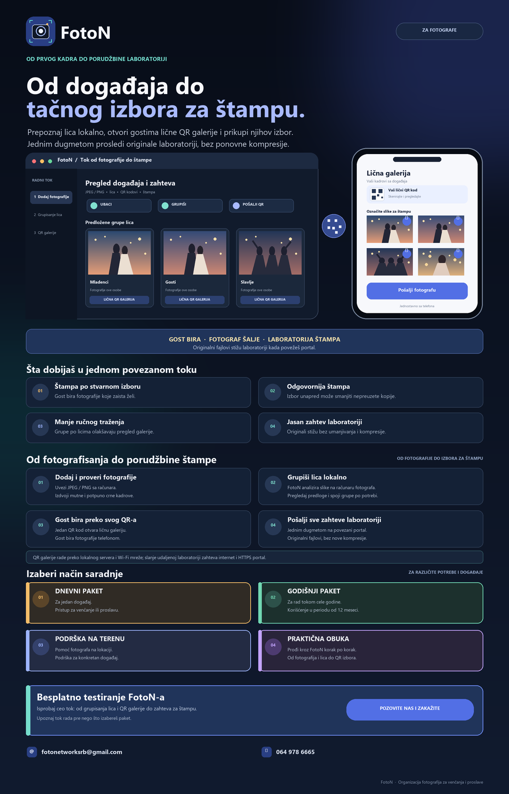

Brže pronalaženje fotografija
FotoN predlaže grupe lica kroz fotografije događaja. Fotograf pregleda grupe pre izvoza.
FotoN pomaže fotografu da pronađe lica, napravi lične QR galerije i prikupi tačan izbor gostiju za štampu.
Jedan događaj. Lične galerije. Jasni zahtevi za štampu.
Umesto da se ceo događaj štampa naslepo, gosti pronađu svoje kadrove i označe šta žele. Fotograf dobija pregledan zahtev za štampu.
FotoN predlaže grupe lica kroz fotografije događaja. Fotograf pregleda grupe pre izvoza.
Jedan QR kod vodi gosta do njegove galerije. Za pregled nije potrebna posebna aplikacija na telefonu.
Gost bira fotografije na telefonu i šalje izbor fotografu tokom događaja.
Folderi po osobama i pregled zahteva olakšavaju organizaciju nakon fotografisanja.
Izbor unapred može da smanji broj kopija koje ostanu nepreuzete i bace se.
U razvojnoj verziji dostupno je izdvajanje mutnih i potpuno crnih kadrova za pregled. Originali se time ne brišu.
FotoN povezuje računar fotografa, telefon gosta i — kada se podesi — portal laboratorije.
Dodaj fotografije u FotoN. Lica se analiziraju na računaru fotografa.
Pregledaj predloge, prilagodi grupisanje i napravi posebne foldere i QR kodove.
Gost skenira svoj QR, pregleda galeriju i označi fotografije koje želi da štampa.
Fotograf vidi ko je izabrao koje fotografije i priprema tačan izbor za štampu.
QR galerije rade preko FotoN servera na računaru fotografa. Telefon gosta i računar treba da budu na istoj Wi‑Fi mreži; gost otvara galeriju direktno u pregledaču.
Kada se podesi HTTPS portal laboratorije, fotograf može da pošalje sve nove zahteve. JPEG/PNG fajlovi se prenose bez smanjivanja ili ponovne kompresije.
Preuzmite pregled FotoN toka rada, prednosti i načina saradnje. Kolaž je spreman da ga podelite sa fotografima i kolegama.
Preuzmi prezentaciju
Izaberi opciju za jedan događaj ili podršku kroz celu sezonu. Za dogovor i ponudu, javi nam se.
Za venčanje, proslavu ili drugi događaj. Organizacija QR galerija i izbor fotografija za taj događaj.
Raspitaj se →Za fotografe koji žele da koriste FotoN tokom cele godine i na više događaja.
Raspitaj se →Praktična pomoć pri pripremi i korišćenju FotoN-a na konkretnom događaju.
Raspitaj se →Prođi kroz uvoz fotografija, grupisanje lica, izvoz QR kodova i tok za štampu.
Raspitaj se →Pozovite nas i zakažite besplatno testiranje aplikacije.
Ne. Gost skenira QR kod telefonom i galeriju otvara u internet pregledaču.
Prepoznavanje i organizacija fotografija rade na računaru fotografa. Za gostujući QR pregled telefon i računar su na istoj Wi‑Fi mreži.
Može kada fotograf poveže FotoN sa HTTPS portalom laboratorije. Slanje zahteva koristi internet, a originalne slike se prenose bez ponovne kompresije.
Ne. Funkcija ih izdvaja za pregled i pomaže da se uklone iz izbora; originali u izvornim folderima ostaju sačuvani.
Pozovi nas ili pošalji poruku da zakažemo kratko upoznavanje.